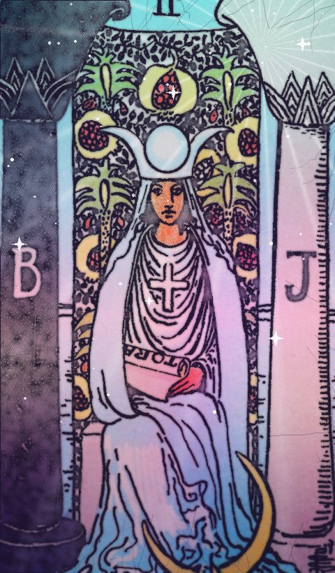

| Número | II |
|---|---|
| Elemento / astro | Luna |
La Sacerdotisa en el tarot: significado, amor, trabajo y consejo
| Palabras clave · Al derecho | intuición, misterio, saber interior, silencio |
|---|---|
| Palabras clave · Invertida | secretos, desconexión, superficialidad |
Al derecho
La respuesta no está fuera. La Sacerdotisa pide escuchar, observar y esperar a que lo oculto se muestre. Hay algo que ya sabes aunque no lo hayas dicho.
Invertida
Ignoras tu intuición o alguien oculta información. Ruido que no deja oír lo importante.
En el amor
Atracción silenciosa, sentimientos no declarados. Tiempo de sentir más que de hablar.
En el trabajo y el dinero
Investiga antes de moverte. No todo está sobre la mesa todavía.
Consejo
Calla, observa y fíate de tu primera impresión.
¿Sí o no?
Es una carta de «quizás»: la respuesta depende de lo que hagas tú. Invertida, se inclina hacia el «no».
En pasado, presente y futuro
En el pasado: Algo de intuición ya ha marcado el camino. Mira qué aprendiste de ello.
En el presente: Ahora mismo toca intuición y misterio. Es la energía del momento.
En el futuro: Se acerca una etapa de silencio. Prepárate para recibirla.
Preguntas frecuentes
¿Qué significa La Sacerdotisa en el tarot?
La respuesta no está fuera. La Sacerdotisa pide escuchar, observar y esperar a que lo oculto se muestre. Hay algo que ya sabes aunque no lo hayas dicho. Calla, observa y fíate de tu primera impresión.
¿La Sacerdotisa es sí o no?
Es una carta de «quizás»: la respuesta depende de lo que hagas tú. Invertida, se inclina hacia el «no».
¿Qué significa La Sacerdotisa invertida?
Ignoras tu intuición o alguien oculta información. Ruido que no deja oír lo importante.